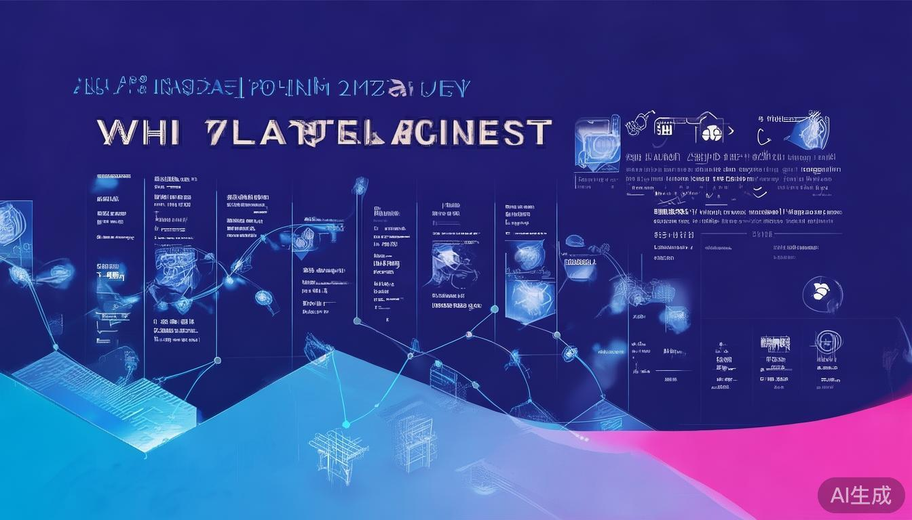

AI 行业应用与职业发展
本章将帮你跳出“AI 只是聊天工具”的认知误区，系统梳理主流行业的 AI 落地场景、岗位需求与能力要求，学完你能精准匹配适合自己的 AI 职业方向，拿到可直接执行的 3 个月学习、求职落地路径，快速切入 AI 相关岗位或借助 AI 完成现有岗位的效率升级。
AI+X 核心行业应用图谱
AI 落地已经从早期的技术试点进入规模化复制阶段，当前渗透最深、商业化成熟度最高的五个领域分别是金融、医疗、教育、制造、法律，每个领域的落地逻辑都遵循“降本、增效、控险”三个核心价值，不存在脱离业务场景的“通用 AI 方案”。
不同行业的 AI 落地优先级存在明显差异，核心场景分布如下：
- 金融：智能风控、智能投顾、合规审计、智能客服，核心需求是数据安全与决策准确率，容错率低于 0.1%
- 医疗：医学影像辅助诊断、临床辅助决策、药物分子筛选、医疗病历结构化，核心需求是符合医疗监管规范，需通过三类医疗器械认证
- 教育：AI 个性化学习路径规划、智能作业批改、虚拟仿真教学、学情分析，核心需求是适配不同年龄段的认知规律，避免知识错误
- 制造：工业缺陷检测、 predictive maintenance（预测性维护）、生产流程优化、供应链智能调度，核心需求是适配工业现场的复杂环境，延迟低于 100ms
- 法律：智能合同审查、类案检索、法律文书生成、合规风险排查，核心需求是法条引用必须逐条可核、逻辑链路可追溯
重点行业落地案例与机会窗口

每个行业的 AI 落地都已经跑出了可复制的标杆案例，而非停留在概念阶段，普通从业者不需要从零探索方案，只需要基于成熟方案做行业场景适配就能找到机会。
金融领域的典型案例是招商银行用智谱AI的大模型搭建的智能合规审查系统，将单笔信贷合同的审查时间从 4 小时压缩到 5 分钟，错误率比人工审核低 32%，当前缺口最大的是既懂信贷业务又能写业务专属提示词、搭建业务 RAG 系统的复合型人才，不需要从零训练模型。医疗领域的典型案例是推想医疗的 AI 肺结节检测产品，已经通过 NMPA 三类认证，在全国 2000 多家医院落地，当前的机会点不是替代医生，而是做专科领域的 AI 辅助工具，比如牙科的 X 光片辅助诊断、中医的智能辨证开方，单垂直场景的年市场规模超过 10 亿。
制造领域的典型案例是宁德时代用百度飞桨搭建的动力电池缺陷检测系统，将产线缺陷检出率从 95% 提升到 99.9%，每年节省质检成本超过 2 亿元，当前大量中小制造企业的需求是低成本的 AI 质检方案，用开源 YOLOv8 模型+几十张行业缺陷图片做小样本微调，就能落地收费。法律领域的典型案例是幂律智能的合同审查系统 MeFlow，已经服务超过 1 万家企业客户，当前机会点是做垂直领域的法律 AI 工具，比如劳动仲裁文书生成、电商合规排查，客单价从 2000 元到 10 万元不等。
AI 岗位全景地图
当前 AI 领域的岗位已经从早期单一的算法研发岗，分化出了大量面向应用落地的岗位，非计算机专业背景的从业者也能找到切入路径，不需要硬卷深度学习算法。
岗位按技术门槛从低到高可分为四类，覆盖不同背景的求职者：
| 岗位名称 | 核心职责 | 适合背景 | 门槛等级 |
|---|---|---|---|
| AI 提示词工程师 | 负责大模型输出效果调优、业务场景提示词模板搭建 | 文科/商科/各行业业务岗 | |
| RAG 应用工程师 | 负责企业私有知识库搭建、检索链路优化、问答效果调优 | 计算机/信息管理/各行业IT岗 | |
| 智能体开发工程师 | 负责多工具调用链路设计、AI Agent 工作流搭建、业务场景自动化流程开发 | 有基础编程能力/产品经理/运营岗 | |
| 大模型微调工程师 | 负责开源大模型的领域适配、LoRA/SFT 微调、模型部署优化 | 计算机/数学/统计相关背景 | |
| 大模型算法工程师 | 负责大模型预训练、架构优化、多模态模型研发 | 计算机/数学相关专业硕士及以上 |
需要特别说明的是，前四类应用层岗位的招聘量已经是算法岗的 7 倍以上，2024 年招聘平台数据显示，应用层岗位的简历投递量仅为算法岗的 1/5（数据时点：2024 年，待 2025/2026 数据更新），竞争压力远低于算法研发岗。
各岗位技能栈与薪资参考
很多人对 AI 岗位的技能要求存在误解，认为必须掌握深度学习、神经网络等底层技术才能入行，实际上应用层岗位的技能栈非常明确，普通人通过 3 个月的系统学习就能达到招聘要求。
不同岗位的核心技能要求与 2024 年国内一线城市（北上广深杭）的薪资范围如下：
- 提示词工程师：核心技能是掌握思维链（CoT）、少样本提示（Few-Shot）、提示词注入防御，会用 Coze/Dify 搭建简单的提示词工作流，应届生/转岗薪资 8-15K/月，1-3 年经验 15-25K/月
- RAG 应用工程师：核心技能是掌握 LangChain/LlamaIndex 框架、向量数据库（Chroma/Milvus/Pinecone）使用、文档切片策略优化、召回率调优，应届生/转岗薪资 12-20K/月，1-3 年经验 20-35K/月
- 智能体开发工程师：核心技能是掌握工具调用（Function Call）逻辑、Dify/Coze 智能体搭建、多 Agent 协作流程设计、API 对接能力，应届生/转岗薪资 15-25K/月，1-3 年经验 25-45K/月
- 大模型微调工程师：核心技能是掌握 LoRA/QLoRA 微调方法、Transformers 库使用、Llama3/Qwen 等开源模型部署、模型量化技术，应届生/转岗薪资 20-30K/月，1-3 年经验 30-60K/月
这里给一个 RAG 场景最常用的文档切片代码示例，是岗位面试的高频考点：
# 基于LangChain的递归字符切片（企业知识库RAG的标准切片方案）
from langchain.text_splitter import RecursiveCharacterTextSplitter
# 初始化切片器：块大小512token，块重叠64token，兼顾上下文完整性与检索精度
text_splitter = RecursiveCharacterTextSplitter(
chunk_size=512,
chunk_overlap=64,
separators=["\n\n", "\n", "。", "！", "？", "，", " "]
)
# 输入企业文档文本，输出可直接存入向量库的切片列表
chunks = text_splitter.split_text(open("企业合规手册.txt", encoding="utf-8").read())官方能力认证体系
当前 AI 应用层岗位的招聘已经从“看学历、看专业”转向“看能力、看作品”，官方的能力认证可以作为简历的初筛加分项，帮你跳过简历筛选环节直接进入面试，不需要盲目考杂七杂八的证书。
目前行业认可度最高的四个认证分别对应四个核心应用岗位，全部可以在线考试，备考周期 1-2 周：
- 字节跳动 Coze 官方提示词工程师认证：考察提示词设计、Coze 机器人搭建能力，免费考试，通过后可进入字节 AI 生态人才库
- 阿里云 RAG 应用工程师认证：考察 RAG 链路搭建、向量数据库使用、阿里云百炼平台应用开发，考试费用 600 元，是企业招聘 RAG 岗的核心参考证书
- 腾讯云智能体开发工程师认证：考察 Agent 工作流设计、工具调用、多智能体协作能力，考试费用 800 元，通过后可对接腾讯云生态的企业项目需求
- 百度飞桨大模型微调工程师认证：考察 LoRA 微调、模型部署、飞桨 PaddleNLP 工具使用，考试费用 500 元，是制造、政务领域 AI 项目的投标认可证书
注意：所有认证都只是加分项，核心还是要有能演示的落地作品，不存在“拿证就能包就业”的情况。
三个月系统学习路线图
非技术背景转 AI 应用层岗位不需要按计算机专业的培养方案从头学起，只需要按“基础-实操-项目”的路径学习，每天投入 2 小时，3 个月就能达到招聘要求。
具体的学习安排按周拆分如下：
- 第 1-4 周（基础阶段）：掌握大模型核心原理（不需要学底层数学，只需要懂 token、上下文窗口、幻觉、温度系数等核心概念），熟练使用 GPT-6.1 Sol、DeepSeek V4.1 Flash、Claude Sonnet 5.5 等主流大模型，掌握 10 种核心提示词技巧，完成 10 个不同场景的提示词模板设计
- 第 5-8 周（技能阶段）：选一个方向深耕（建议非技术背景优先选 RAG 或智能体方向），掌握 Dify 开源平台的使用，学会搭建个人知识库问答系统、简单的智能体工作流，掌握向量数据库的基础操作，能独立完成从文档上传到问答输出的全链路搭建
- 第 9-12 周（项目阶段）：完成 2 个可演示的落地项目，比如“公司员工手册 RAG 问答系统”“简历优化智能体”，整理成作品集，同时刷 20 道对应岗位的面试题，开始投递简历
学习过程中不要陷入“收集资料”的误区，所有知识点学完当天就要动手实操，比如学完提示词技巧当天就要写 3 个场景的提示词测试效果。
作品集打造与求职策略
AI 岗位招聘最核心的筛选标准是“你做过什么”，而不是“你学过什么”，一份能在线演示的作品集，比 10 段实习经历、10 张证书的说服力都强。
作品集不需要做非常复杂的大项目，只需要 2-3 个垂直场景的小项目即可，每个项目要包含完整的链路：需求背景、实现方案、效果数据、在线演示链接。比如非技术背景的求职者可以做三个项目：1）基于 Dify 搭建的法律合同审查 RAG 系统，上传 100 份劳动合同模板，实现风险点自动排查；2）基于 Coze 搭建的电商客服智能体，能自动回复客户咨询、查询订单、处理售后；3）针对自己原有行业的 AI 效率工具，比如给老师做的智能作业批改工具、给HR做的简历筛选工具。
求职的时候不要只盯着“AI 工程师”的岗位投递，要重点投递各行业的“AI 赋能岗”“数字化岗”，比如金融行业的智能合规岗、制造行业的 AI 质检岗、教育行业的 AI 教研岗，这些岗位的竞争压力只有纯互联网 AI 岗的 1/3，薪资水平和纯 AI 岗持平，而且更偏好有行业经验的转行者。投递简历的时候要把作品集链接放在简历最顶部，确保 HR 打开简历第一眼就能看到你的作品演示地址。
小结与练习
核心收获
- AI 落地已经进入规模化阶段，金融、医疗、教育、制造、法律五大领域的应用场景已经成熟，机会集中在应用层而非底层算法研发，非技术背景也能切入。
- 应用层岗位分为提示词工程师、RAG 工程师、智能体工程师、微调工程师四类，招聘量是算法岗的7倍，技能栈明确，3个月系统学习即可达到入职要求。
- AI 岗位求职的核心是可演示的作品集，而非学历、证书或专业背景，优先投递各行业的复合型 AI 岗位，竞争压力更小。
动手练习
- 用 Dify 搭建一个个人知识库 RAG 问答系统：上传你所在行业的 10 份公开文档，设置 chunk_size=512、chunk_overlap=64，测试问答准确率，记录3个效果不好的问题并优化切片策略。
- 用 Coze 搭建一个简历优化智能体：配置“简历信息提取-岗位JD匹配-优化建议生成”三步工作流，接入文件读取工具，实现上传简历和JD自动输出优化方案。
- 选定一个目标岗位，整理对应的3个项目方向，写一份1页纸的项目规划，明确每个项目的核心功能、用到的工具、预期效果。
扩展阅读方向
阅读 Dify 官方文档的「RAG 最佳实践」章节与 LangChain 官方的「Agent 开发指南」，重点理解检索召回率优化、工具调用容错的相关内容，这是当前 AI 应用落地的核心技术难点，也是面试的高频考点。
本文由本站 AI 创作整理，内容基于公开知识/官方资料提炼，信息请以官方发布为准； 涉及的历史事件、产品与数据均可在公开渠道查证，本站不编造来源。引用外部内容遵循其原始许可，标注出处即可。